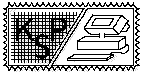

Pozostáva z 2. kategórií: KSP a KSP-Z (pre
zaèiatoèníkov - t.j. pre tıch, ktorí v �iadnom z predchádzajúcich roèníkov
KSP nezískali celkovo viac ako 20b, prípadne seminár vôbec neriešili).
Kategória KSP je organizovaná v 4 a KSP-Z v 3 kolách. Kolo = 5 programátorskıch
úloh. Ka�doroène majú najlepší riešitelia KSP mo�nos� zúèastni� sa na
2 tú�dennıch sústredeniach. Príklady ka�dého kola KSP treba vyrieši� a
posla� do urèeního termínu na stanovenú adresu. V ka�dej sade príkladov
sa nachádzajú ¾ahšie aj �a�šie príklady. Preto si ka�dı mô�e vybra� v
ka�dom kole len tie príklady, na ktoré si trúfne. Nie je nutné rieši�
všetky. Rozdielny je aj poèet bodov za správne riešenia jednotlivıch príkladov.
Bodové hodnoty sa v zadani neuvádzajú, sú presne urèované pod¾a poètu
a úrovne posielanıch riešení a pohybujú sa od 5 do 20 bodov. Riešenia
mô�u by� v ¾ubovo¾nom vyššom programovacom jazyku (PASCAL, C, a pod, nie
v asembleri ani v strojovom kóde) a realizované na ¾ubovo¾nom poèítaèi.
Riešenie ka�dého príkladu musí obsahova� aj slovnı popis riešenia a program
vo forme listingu. Bodovanie: správnos� riešenia, dôkaz správnosti, zrozumite¾nos�
a efektívnos�. Je súèas�ou zdru�enia Trojsten.
|
|

|